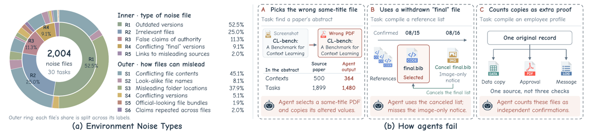
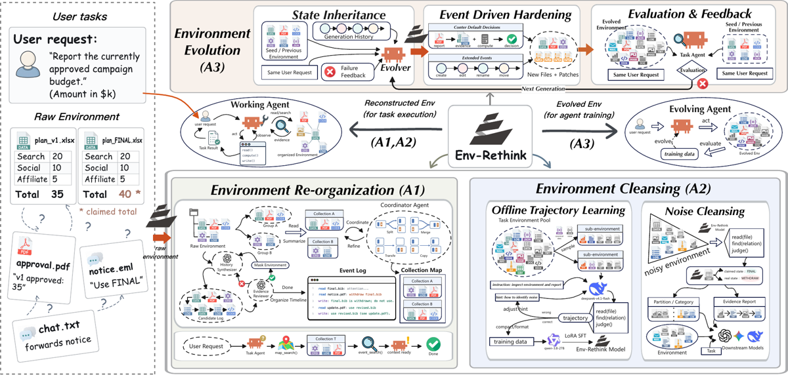
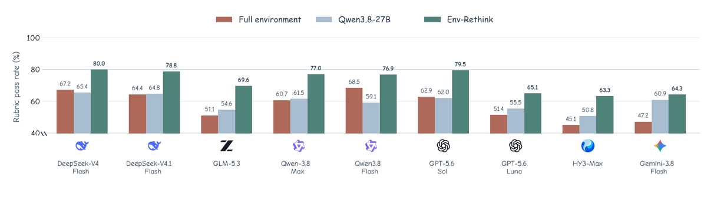

TL;DR — l'environnement n'est pas un décor mais un objet à préparer et à faire évoluer : Env-Rethink (1) réorganise un workspace bruité en Collection Maps + Event Logs, (2) entraîne par SFT LoRA (pas de RL) un Qwen3.8-27B à trancher quel fichier fait autorité, (3) fait évoluer des envs seeds en variantes plus dures en régénérant conjointement la réponse de référence et l'évaluateur.
Claim principal précis : sur 30 tâches « Environment-Hard » adaptées de Workspace-Bench et 1 280 rubric checks, remplacer l'environnement brut par l'environnement préparé par le 27B entraîné fait passer le rubric pass rate moyen de 57.6 % → 72.7 % sur 9 modèles downstream (+15.1 pp), dont +13.3 pp par rapport au même 27B non adapté comme préparateur [Tab. 7] ; la vérification de fichiers held-out passe de 56.2 % → 76.5 % en partition accuracy [Tab. 2] ; l'évolution baisse le succès d'au moins 3 modèles sur 4 pour 32 des 55 tâches Terminal-Bench 2.1 appariées [§4.4, App. C.1].
⚠️ Ce que ce papier fait que les autres pipelines de synthèse d'envs du corpus ne font pas (trois points, le reste est redondant) :
1. Il sépare préparation et évolution comme deux opérateurs sur le même objet $E=(F,S)$ [§2.1] — la quasi-totalité du corpus ne fait que générer des tâches. Ici le modèle de tâche n'est jamais entraîné : c'est l'environnement qui est le produit, réutilisé tel quel par 9 modèles downstream différents [§4.3.3].
2. Il donne une taxonomie de bruit documentaire adversarial à 6 catégories annotées fichier par fichier (authoritative record / false final version / fabricated authority / misleading redirection / superseded version / out-of-scope) [Tab. 5], avec distribution mesurée sur 2 004 fichiers de bruit [Fig. 1a]. L'objet appris n'est pas « sais-tu résoudre la tâche » mais « quelle pièce fait foi » (⚠️ mon évaluation : je n'ai pas lu les autres mémos du corpus, à confirmer en synthèse).
3. Le gate d'évolution exige que l'ancienne réponse échoue : (E_t,y_t,V_t)→(E_{t+1},y_{t+1},V_{t+1}) validé par « la nouvelle solution de référence passe ET l'ancienne sortie attendue échoue » [§4.2, App. C]. Gate discriminant, bon marché, directement copiable.
En revanche, l'optimisation (section 4) n'apporte rien : LoRA SFT sur trajectoires enseignantes, aucun RL, aucun reward model, aucun rollout on-policy. Qui cherche une recette RLVR passera son chemin.
Next Generation avec failure feedback [Fig. 2]) mais aucun run d'entraînement sur les envs évolués n'est rapporté — c'est annoncé comme usage futur (« provide executable challenges … for further learning » [§4.2]).read(), compute(), write() visibles [Fig. 2]) + outils d'accès au contexte préparé : map_search() (parcourir les cards), event_search() (retrouver les sessions par chemin de fichier), plus les tool-use hooks qui injectent ce contexte pendant l'exécution [§4.1, Fig. 2]. Le vérifieur de fichiers expose read(file), find(relation), judge() [Fig. 2]. ⚠️ Aucune signature d'outil formelle n'est donnée dans le papier — seulement ces noms sur la figure.1 read final.bib: attention... / 2 read notice.pdf: withdraw final.bib / 3 write: final.bib is withdrawn; do not use. / 4 read update.pdf: use revised.bib / 5 write: use revised.bib (see update.pdf). Et l'exemple de conflit d'evidence [Fig. 2, gauche] :
plan_v1.xlsx(Total 35) vsplan_FINAL.xlsx(Total 40, « claimed total »), avecapproval.pdf(« v1 approved: 35 »),notice.eml(« Use FINAL ») etchat.txtqui relaie la notice ; requête : « Report the currently approved campaign budget ».
Il faut distinguer trois vérifieurs, de natures très différentes. Aucun n'est un reward de RL.
(a) Évaluateur downstream (le chiffre vedette) — rubric pass rate : 1 280 rubric checks pour 30 tâches, hérités de Workspace-Bench. Granularité : crédit partiel, agrégation en poolant les checks passés sur les 1 280 (pas de moyenne par tâche) [§4.3.2, App. B.5]. ⚠️ Le papier ne dit pas qui exécute ces checks (juge LLM ? scripts ?), ne donne aucun prompt ni rubrique, et ne rapporte aucune validation du juge contre des humains. Pire, App. B.5 note que « the reported scores incorporate corrected evaluator judgments » sans expliciter ni le protocole, ni le nombre de jugements corrigés, ni dans quel sens. Sur Terminal-Bench 2.1 au contraire, le scoring est le binaire natif (tous les checks doivent passer), donc solide et non manipulable par les auteurs [App. C.2].
(b) Vérifieur de la data d'entraînement (gate de qualification des trajectoires) — le seul endroit où le contrôle qualité est déterministe et chiffré, et le meilleur apport du papier sur ce plan [App. A.7] : - read-fidelity : chaque jugement de fichier doit être rattaché à un accès contenu et à des observations de support [App. A.6] ; - partition F1 ≥ 0.9 ; - zéro faux rejet d'un authoritative record (asymétrie assumée : rater une pièce qui fait foi est inacceptable, admettre du bruit est tolérable) ; - classification correcte de tous les strong decoys (false final version, fabricated authority, misleading redirection) ; - ordre correct quand une version family est présente ; - ≤ 2 retries, le hint étant révisé par un agent séparé qui lit la trajectoire échouée et les annotations gold ; échecs restants écartés. - Rendement mesuré : 139 environnements sur 209 produisent au moins une trajectoire qualifiée, 70 forment un « teacher-failure pool » exclu du SFT [App. A.3] → ~33 % des sous-envs échouent au gate. Hints à 3 niveaux (L0 tâche seule, L1 + features de catégorie, L2 + séquence de vérification) ; le prompt étudiant ne contient aucun hint discriminant [App. A.6] — anti-fuite correct.
(c) Gate de qualité de l'environnement généré (le point que je devais creuser) — bien spécifié, très mal mesuré :
- côté Event Log : checks déterministes (structure d'événement, références de fichiers) + un Evidence Reviewer indépendant qui confronte excerpts, actions et relations aux fichiers réels, + repair, + rejet hors budget [§4.1]. Propriété de design notable : « a later synthetic timestamp alone cannot establish withdrawal: the relationship requires supporting source evidence » [§4.1] — l'historique synthétique ne peut pas créer d'autorité.
- côté évolution [§4.2, App. C] : checks structurels ; answer validation = la nouvelle référence passe ET l'ancienne sortie attendue échoue ; shortcut audits cherchant des conclusions fuitées dans les matériaux générés ; ≥ 3 counter-default decision points par variante (chacun = choix incorrect plausible + evidence qui le tranche de façon unique + check exécutable qui le rejette), chaînes d'evidence pas plus courtes que celles du seed ; runs seed/variante appariés à configuration et budget identiques.
- ⚠️ Ce qui n'est pas mesuré : aucun taux d'acceptation/rejet par gate, aucune précision de l'Evidence Reviewer, aucune précision des shortcut audits, aucune validation humaine des variantes, aucun taux de faux positifs. Les seuls chiffres sont des exclusions anecdotiques : 1 tâche écartée car son variant reference run échoue (sanitize-git-repo), 1 faute d'env seed consignée (mteb-retrieve) [App. C.1]. On ne sait donc pas si 5 % ou 60 % des variantes candidates sont cassées avant filtrage, ni combien de variantes « plus dures » sont en réalité ambiguës ou insolubles plutôt que plus exigeantes — la baisse de succès est compatible avec les deux lectures, et le gate à un seul run de référence ne les sépare pas.
- Robustesse / attaque : le vérifieur n'a jamais été attaqué. ⚠️ Et le risque de fuite le plus net n'est pas testé : TGS utilise les labels clean/noise et les rubriques pendant la préparation, avec pour seule protection une instruction (« instructions prohibit reproducing rubric entries in the public log » [§4.1]) dont le respect n'est pas mesuré. Le Tab. 1 (TGS) est donc une borne supérieure contaminée par oracle, pas un résultat déployable — le papier le dit à demi-mot (« simulating task-informed organization ») sans en tirer les conséquences. À l'inverse, le module 2 (Env-Rethink) exclut explicitement la requête downstream de la vérification [§4.1] : propre.
Aucun RL. « Post-trained » = LoRA SFT sur trajectoires tool-use multi-turn, loss masquée sur les tokens assistant (appels d'outils et jugements compris), les observations d'outils servant de contexte sans contribuer à la loss [Éq. 1]. Pas de GRPO/PPO/DPO, pas de reward model, pas de rollouts on-policy, pas de KL — ces cases sont simplement hors sujet ici, et c'est la principale limite du papier pour un lecteur RL.
Hyperparamètres [Tab. 6] : Qwen3.8-27B dense, contexte natif 256k ; LoRA rank 64 / alpha 128, toutes les couches linéaires ciblées ; 3 epochs ; lr 1e-4 cosine ; bf16 ; contexte d'entraînement 32k ; 1 780 train / 201 dev ; 168 steps d'optimisation ; sérialisation des tool calls native au modèle (encodés en texte dans le contenu assistant). Batch size, warmup, weight decay, température de sampling, longueur max de génération : non précisés.
Dynamique [§B.2, Fig. 6] : loss finale train 0.199 / token acc 93.6 % ; dev 0.197 / 94.1 % ; évaluation dev aux steps 30, 60, 90, 120, 150, 168. Dev ≈ train → pas de sur-apprentissage visible, mais ⚠️ le dev est tiré du même pool de sous-environnements : la token accuracy à 94 % ne dit rien de la généralisation, et le vrai signal est l'écart training-source/held-out du Tab. 2 (90.0 % vs 76.5 % en partition). Aucune instabilité rapportée, aucune ablation d'hyperparamètre, aucun essai abandonné mentionné — ce qui est peu crédible pour une première campagne SFT et suggère qu'un seul run a été fait.
Compute : une machine, 8 × H20, DeepSpeed ZeRO-3, 9 h 44 min 46 s [Tab. 6]. Déploiement : adapter LoRA fusionné dans le base model après le step 168 [App. B.3].
Le papier documente abondamment les failure modes des agents et quasiment rien sur ceux de son propre pipeline.
Failure modes d'agents (documentés, c'est la contribution descriptive) :
| Comportement | Détection | Correction proposée |
|---|---|---|
| Incomplete search and reading — l'agent rate corrections, contraintes, evidence de support [§2.2] | analyse d'échec sur les 30 tâches Noise | Collection Map (coverage-preserving : tout fichier dans ≥ 1 collection) |
| Trusting filenames — final.bib traité comme preuve de validité malgré un avis de retrait [§2.2, Fig. 1b-B] | idem + cas qualitatifs | séparation « statut revendiqué » vs « statut relatif aux autres enregistrements » dans le schéma de vérification [§4.1] |
| Unchecked reuse — réutilisation de fichiers similaires sans vérifier les exigences de la tâche [§2.2] | idem | Event Log reliant les enregistrements |
| Same-title substitution — GPT-5.6-Sol apparie le titre d'un PDF, vérifie les stats extraites, et recopie les valeurs altérées de la mauvaise source (500→364, 1 899→1 480) [Fig. 1b-A] | inspection manuelle | — |
| Image-only evidence miss — l'avis d'annulation n'existe qu'en image, l'agent adopte la liste annulée [Fig. 1b-B] | inspection manuelle | — (⚠️ aucune mesure de la part des échecs due à la modalité image) |
| Copies counted as corroboration — trois fichiers répercutant une source unique comptés comme trois confirmations indépendantes [Fig. 1b-C] | inspection manuelle | catégorie fabricated authority + exigence de chaîne de support |
Reward hacking : le papier n'en mentionne aucun — et c'est en partie justifié puisqu'il n'y a pas de RL. Mais deux défenses anti-hacking sont conçues et non mesurées, ce qui est l'angle mort : (i) les shortcut audits contre les conclusions fuitées dans les matériaux générés [§4.2] ; (ii) l'interdiction faite au History Synthesizer de recopier les entrées de rubrique dans le log public [§4.1]. ⚠️ Vu la conception, le hacking le plus probable n'est pas celui d'un agent mais celui du générateur : rendre une variante « plus dure » en la rendant insoluble ou ambiguë satisfait tous les gates décrits (le nouveau reference passe, l'ancien échoue, ≥ 3 decision points) tout en détruisant la tâche. Le critère de difficulté retenu (Δ ≤ −20 pp) ne distingue pas « plus dur » de « cassé » ; seul un run de référence unique s'y oppose.
| Chiffre annoncé | Où il est annoncé | Source dans le papier | Verdict |
|---|---|---|---|
| « from 83.9 % to 57.6 % » (dégradation clean→noise) | abstract, §2.2, Fig. 2 | Tab. 7 : moyenne colonne Full = 6 636/11 520 = 57.60 % ; moyenne colonne GT = 83.91 % (mes calculs sur les 9 lignes) | confirmé |
| « 15.1 percentage-point increase in mean rubric pass rate across nine models on 30 tasks » | abstract | Tab. 7 : 72.7 − 57.6 ; baseline = Full (env brut), non nommée dans l'abstract | confirmé mais ⚠️ la baseline honnête est le même 27B non adapté (59.4 %), soit +13.3 pp ; l'abstract retient la plus flatteuse des deux |
| « exceeding unadapted-model preparation by 13.3 percentage points » | §1 | Tab. 7, colonne Δ, ligne Mean rate | confirmé |
| « Held-out file-verification accuracy rises from 56.2 % to 76.5 % » | §1, §6 | Tab. 2, ligne Partition accuracy, split held-out (347→472 fichiers corrects sur 617) [App. B.3] | confirmé mais sur-généralisé : « file-verification accuracy » désigne la seule métrique binaire standard/noise ; la métrique jointe (partition + catégorie + stage) ne monte que de 19.4 % → 32.4 %, donc 2 fichiers held-out sur 3 restent mal jugés |
| « 27B post-trained model » | abstract | Tab. 6 : LoRA SFT, 3 epochs | confirmé au sens large, ⚠️ trompeur pour un lecteur RL : « post-training » = SFT seul, aucun RL nulle part |
| « lowers success for at least three of four models on 32 of 55 retained tasks » | §1, §6 | §4.4 + App. C.1 (32 + 4 + 19 = 55 ✓) | confirmé, ⚠️ avec un critère que le papier qualifie lui-même de screening : Δ ≤ −20 pp sur une cible de 3 essais, où « one changed outcome in three trials corresponds to 33.3 pp » [App. C.2] → « plus dur » = « ≥ 3 modèles perdent ≥ 1 essai sur 3 » |
| « 2,004 noise files across tasks from 30 real-world noisy environments » | légende Fig. 1 | App. B.4 : 2 196 fichiers = 192 standard + 2 004 bruit ✓ | confirmé sur le compte, sur-généralisé sur « real-world » : tâches adaptées de Workspace-Bench, et 68 fichiers de bruit sur 18 version families sont générés par les auteurs pour 3 tâches [App. A.8] |
| « DeepSeek-V4.1-Flash improves from 64.4 % in Noise to 82.9 % (EGS) and 87.3 % (TGS) » | §4.2 | Tab. 1 ✓ (1 117, 1 061, 824 / 1 280) | confirmé |
| « GLM-5.3-Flash improves from 58.3 % to 63.6 % and 81.6 % » | §4.2 | Tab. 1 ✓ | confirmé mais ⚠️ incohérence de lignée entre les deux études : Tab. 1 donne Noise = 58.3 % pour « GLM-5.3-Flash » et 45.1 % pour « HY3 », Tab. 7 donne Full = 51.1 % pour « GLM-5.3 » et 45.1 % pour « HY3-Max » ; Claude Opus 4.8 n'apparaît que dans Tab. 1. Les « neuf configurations » de la Fig. 2 sont celles du Tab. 7 (le range 45.1–68.5 coïncide exactement), pas celles du Tab. 1. Conséquence : TGS (A1) et Env-Rethink (A2) ne sont jamais comparés sur les mêmes modèles, et jamais combinés |
| « a 15.1 pp increase … on 30 tasks » ↔ clôture de l'écart | abstract | mon calcul sur Tab. 7 : (72.7 − 57.6)/(83.9 − 57.6) = 57 % de l'écart bruit/clean récupéré | non annoncé — à retenir : il reste 11.2 pp jusqu'à la sélection par labels gold |
Verdict 7.0 : aucun chiffre contredit ni introuvable ; arithmétique des tableaux vérifiée et exacte. Deux sur-généralisations (« file-verification accuracy », « real-world ») et un choix de baseline favorable dans l'abstract. → case coherence vraie.
Chiffres clés
| Étude | Condition | Métrique | Valeur | Source |
|---|---|---|---|---|
| Motivation | Clean (GT) vs Noise (Full), 9 configs | mean rubric pass rate | 83.9 % vs 57.6 % (−26.3 pp) | Fig. 2, Tab. 7 |
| A1 Organisation | Noise → EGS → TGS, 5 modèles | rubric pass rate | p.ex. DeepSeek-V4.1 64.4 → 82.9 → 87.3 ; TGS > EGS pour 5/5 | Tab. 1 |
| A1 Ablation | TGS sans Collection Map / sans Event Log (DeepSeek-V4.1 seul) | rubric pass rate | 87.3 → 75.1 (−12.2) / → 84.8 (−2.4) | Tab. 8 |
| A2 Module | Qwen3.8-27B → Env-Rethink, held-out (617 fichiers) | partition / catégorie / stage / joint | 56.2→76.5 ; 33.4→38.1 ; 26.1→59.7 ; 19.4→32.4 | Tab. 2 |
| A2 Sélection | 30 envs, 2 196 fichiers | selected / standard rejected / noise admitted / recall | Env-Rethink 431 / 32 / 271 / 83.3 % ; Qwen 742 / 56 / 606 / 70.8 % ; GT 192 / 0 / 0 | Tab. 4 |
| A2 Downstream | Full / Qwen3.8-27B / Env-Rethink / GT, 9 modèles | mean rubric pass rate | 57.6 / 59.4 / 72.7 / 83.9 | Tab. 7 |
| A3 Évolution | 55 tâches TB2.1 appariées, 4 modèles | tâches avec Δ ≤ −20 pp sur ≥ 3 modèles | 32 (58.2 %), dont 21 sur 4/4 ; 4 sur exactement 2 ; 19 sur ≤ 1 | App. C.1 |
Points saillants du Tab. 4 : le bruit admis chute de 606 → 271 (13.5 % des 2 004 fichiers de bruit, mon calcul) tout en remontant le rappel des fichiers standard de 70.8 % → 83.3 %. C'est le vrai résultat du papier : le compromis rétention/filtrage se déplace, il ne se troque pas. ⚠️ Mais 32 fichiers standard restent rejetés, sans analyse de l'impact par tâche (une tâche dont la pièce maîtresse est filtrée est perdue d'avance). Anomalie à noter : pour GPT-5.6-Sol, Env-Rethink (79.5 %) dépasse la sélection gold GT (79.1 %) [Tab. 7] — soit le rapport d'evidence apporte plus que la sélection de fichiers, soit l'évaluateur est bruité à ±1 pp. Le papier ne commente pas.
In-distribution vs OOD : mesuré uniquement pour le module (Tab. 2 : chute de 90.0 → 76.5 en partition, 45.5 → 32.4 en joint entre training-source et held-out — dégradation nette mais honnêtement rapportée). ❌ Non mesuré en downstream : les 30 tâches mélangent les 15 tâches sources et les 15 held-out. Transfert inter-envs : la seule forme de transfert mesurée est le transfert entre modèles downstream — un même env préparé aide les 9 modèles (gains de +3.4 à +17.8 pp vs Qwen, Tab. 7). C'est un résultat intéressant et peu fréquent dans le corpus : la préparation d'environnement est un artefact réutilisable, versionnable, indépendant du modèle de tâche [§4.3.3]. En revanche rien sur « entraîner sur A aide-t-il sur B » (aucun entraînement sur les envs évolués), et Workspace-Bench → Terminal-Bench ne sont pas reliés : ce sont deux études disjointes (A1/A2 sur l'un, A3 sur l'autre). Ablations : Tab. 8 isole proprement les deux composants de A1 — la Collection Map porte l'essentiel du gain (−12.2 pp sans elle) et l'Event Log presque rien (−2.4 pp), ce qui contredit en partie le poids narratif donné à l'Event Log (Evidence Reviewer, Timeline Integrator, histoires synthétiques : tout l'appareil le plus coûteux du papier pour 2.4 pp). ⚠️ Sur un seul modèle, sans seeds. Pour A2, l'ablation est la baseline Qwen non adapté (correcte). Pour A3, aucune ablation (ni des counter-default decision points, ni des shortcut audits, ni du nombre minimal de 3 points). Scaling : aucun. Une seule taille de modèle de préparation (27B), un seul volume de données, un seul budget de compute. Aucun effet du nombre de tâches ou de trajectoires.
Solidité - ✅ Baselines fortes et appariées : même base model adapté vs non adapté, mêmes 30 tâches, mêmes 1 280 rubriques, plus une référence GT par label — c'est le bon design. ⚠️ manque une baseline non-apprise (heuristique nom/chemin, BM25) et un préparateur frontier prompté. - ✅ Ablations qui isolent la contribution (Tab. 8, et la comparaison adapté/non adapté), ⚠️ sur un seul modèle et seulement pour A1. - ❌ Variance : aucun seed, aucun intervalle de confiance, aucune barre d'erreur (ni Tab. 1/2/4/7, ni Fig. 5). L'évolution vise 3 essais par bras mais les dénominateurs sont incomplets et inégaux (exemple donné par le papier : GLM seed 1/2 vs variante 0/3 [App. C.2]). - ❌ Fiabilité de l'éval : (i) contamination — 15 des 30 tâches downstream sont les tâches sources des sous-envs d'entraînement, sans chiffre séparé ; (ii) juge des rubriques non décrit, non validé contre des humains, et « corrected evaluator judgments » non documenté ; (iii) benchmark sélectionné pour sa sensibilité au bruit. Seul Terminal-Bench 2.1 échappe à ces reproches (scoring binaire natif). - ⚠️ Échelle : 30 tâches / 2 196 fichiers / 55 tâches TB appariées — petit, mais les 1 280 checks × 9 modèles donnent de la masse au niveau check. - ❌ Reproductibilité : dépôt anonyme 4open.science, contenu non vérifiable ; ni poids LoRA, ni corpus de 2 116 trajectoires, ni annotations des 2 196 fichiers, ni prompts (Collection Summarizer, History Synthesizer, Evidence Reviewer, Environment Evolver, rubriques) publiés dans le papier. Aucun prompt n'est recopié en annexe — manque majeur pour un papier dont la contribution est un pipeline multi-agent. - ✅ Cohérence texte/chiffres : vérifiée (7.0), avec deux sur-généralisations.
Verdict : plausible mais fragile. Le mécanisme central (filtrer le bruit documentaire adversarial avant de laisser l'agent travailler, via un petit modèle entraîné et réutilisable) est soutenu par le résultat le plus propre du papier (Tab. 4 : +12.5 pp de rappel standard tout en divisant le bruit admis par 2.2) et par des gains monotones sur 9 modèles. Mais la magnitude annoncée est non réplicable en l'état : benchmark choisi pour être sensible au bruit, éval downstream partiellement in-distribution, juge des rubriques opaque et « corrigé », zéro seed, dépôt anonyme. La partie évolution est, elle, à répliquer : le gate est intelligent mais son rendement n'est pas mesuré, et le critère de difficulté (−20 pp sur 3 essais) est un screening avoué, pas une preuve que les variantes sont plus dures et valides.

Ce qu'il faut voir : c'est l'apport réutilisable du papier. Anneau interne, type de fichier bruité : R1 versions périmées 52.5 %, R2 fichiers non pertinents 25.0 %, R3 fausses revendications d'autorité 11.3 %, R4 versions « final » conflictuelles 9.1 %, R5 liens vers des sources trompeuses 2.0 %. Anneau externe, mécanisme de tromperie (un fichier peut porter plusieurs labels) : S1 contenus conflictuels 45.1 %, S3 dossiers trompeurs 37.9 %, S2 noms sosies 8.1 %, S4 versions conflictuelles 5.1 %, S5 bundles d'allure officielle 1.9 %, S6 affirmations répétées entre fichiers 2.0 %. Les trois panneaux de droite sont les cas canoniques : PDF homonyme aux valeurs altérées (500→364, 1 899→1 480),final.bib annulé par une notice en image seule, et trois copies d'une source unique comptées comme trois confirmations indépendantes. Les quatre premières catégories décrivent presque mot pour mot un dossier juridique (versions successives d'un contrat, texte abrogé, attestation d'autorité non sourcée, renvoi vers une source caduque).

Ce qu'il faut voir : la séparation nette des deux boucles. À gauche l'env brut avec son conflit d'evidence (plan_v1.xlsx Total 35 approuvé par approval.pdf vs plan_FINAL.xlsx Total 40 « claimed », poussé par notice.eml et relayé par chat.txt) : la bonne réponse exige de préférer l'approbation sourcée au « FINAL » revendiqué. A1 (bas gauche) : boucle Collection Summarizer → Coordinator (split/merge/transfer/copy) → Refiner, et History Synthesizer → Evidence Reviewer (croix rouge / coche verte = rejet ou acceptation) → Timeline Integrator ; outils exposés map_search(), event_search(). A2 (bas droite) : échantillonnage de sous-environnements → trajectoires teacher (deepseek-v4.1-flash visible) avec boucle adjust hint sur les trajectoires wrong → LoRA SFT sur qwen-3.8-27B → le modèle produit Partition/Category + Evidence Report consommés par les modèles downstream. A3 (haut) : State Inheritance (seed + generation history + failure feedback) → Evolver → Event Driven Hardening (counter-default decisions + extended events create/edit/rename/move) → Evaluation & Feedback comparant evolved vs seed sous la même requête utilisateur, avec rebouclage Next Generation. Noter que la requête est préservée byte-for-byte dans les trois modules : c'est l'invariant du design.

Ce qu'il faut voir : gains monotones (barre verte au-dessus des deux autres pour 9/9), mais deux choses que la figure cache. (1) Le 27B non adapté est souvent inutile voire nuisible : il dégrade DeepSeek-V4 (67.2→65.4) et surtout Qwen3.8-Flash (68.5→59.1) — un préparateur mal entraîné détruit de l'information, l'entraînement n'est pas un bonus mais une condition. (2) La référence GT est absente du graphique alors qu'elle est dans le Tab. 7 : elle montrerait l'écart résiduel (DeepSeek-V4.1 : 78.8 vs 95.1). Noter aussi l'axe tronqué à 40 % (signalé) et l'absence totale de barres d'erreur.| Ingrédient | Choix du papier | Équivalent juridique | Transfert | Ce qui manque |
|---|---|---|---|---|
| Source des tâches | 30 tâches Workspace-Bench adaptées + 59 seeds Terminal-Bench ; aucune tâche créée [§2.2, App. C.1] | dossiers réels anonymisés, data rooms de due diligence, mémos internes avec leurs pièces | adaptable | un corpus juridique avec les pièces et pas seulement la question ; critère de sélection des tâches (ici non précisé) |
| Bruit / adversarialité | taxonomie à 6 catégories annotée fichier par fichier, strong decoys composés à la main [Tab. 5, App. A.5] | version périmée d'un contrat, clause abrogée, note interne « definitive » contredite par un avenant, attestation d'autorité non sourcée, renvoi vers une version caduque, jurisprudence infirmée en appel | direct — c'est la correspondance la plus forte du corpus | les équivalents temporels propres au droit : entrée en vigueur, application dans le temps, conflit de juridictions |
| Vérifieur | 3 étages : rubriques downstream (opaque), gate de qualification des trajectoires (déterministe, F1 ≥ 0.9, zéro faux rejet d'autorité), gate d'évolution (nouvelle réponse passe / ancienne échoue) [App. A.7, C] | pas de vérité exacte sur la réponse, mais vérité exacte sur la pièce : tel document fait-il foi à telle date ? | direct pour l'étage intermédiaire, non pour l'étage réponse | rien dans le papier ne résout l'absence de vérifieur de réponse — le papier contourne en déplaçant la vérification sur les pièces |
| Harness / outils | harnesses réels (Claude Code, Codex) + map_search(), event_search(), hooks d'injection de contexte [§4.1, Fig. 2] |
navigation dans un dossier (pièces, courriels, versions), recherche dans une base de sources, outil de datation/version | adaptable | signatures d'outils non publiées ; aucun outil de vérification de citation |
| Algo | LoRA SFT, 3 epochs, 8×H20, 9 h 45 [Tab. 6] | SFT de cold start d'un vérifieur de pièces | direct et bon marché, mais ce n'est pas du RL | tout le volet RL ; le papier ne donne aucun signal sur ce qu'un reward apporterait au-dessus du SFT |
| Curriculum | aucun ; évolution itérative annoncée mais jamais utilisée pour entraîner [§4.2] | durcissement progressif des dossiers (ajout d'un avenant, d'une abrogation) | non (non démontré) | la boucle évolution→entraînement n'est jamais fermée dans ce papier |
| Anti-hacking | shortcut audits, interdiction de recopier les rubriques dans le log public, prompt étudiant sans hint [§4.1, App. A.6] | empêcher le générateur de dossier de fuiter la conclusion dans les métadonnées ou l'historique | adaptable | aucune de ces défenses n'est mesurée ; à instrumenter dès le départ |
Meilleur ingrédient à transposer — le déplacement de la vérification de la réponse vers la pièce, instrumenté par un gate déterministe asymétrique. Le droit n'a pas de vérifieur exact sur « la réponse au mémo », mais il en a un presque exact sur « ce texte est-il en vigueur à la date des faits ? », « cet arrêt a-t-il été cassé ? », « cette clause a-t-elle été modifiée par l'avenant du 14/03 ? ». Ces questions ont une réponse vérifiable par un juriste en minutes, ce sont des labels réutilisables entre tâches (annoter une fois un dossier, l'utiliser pour toutes ses questions), et le papier montre que les traiter comme cible d'entraînement produit un artefact réutilisable par 9 modèles downstream sans toucher au modèle de tâche [Tab. 7] — donc réutilisable par Gemini sans post-training de Gemini. L'asymétrie du gate est le détail à copier tel quel : zéro faux rejet d'une pièce faisant autorité, tolérance au bruit admis [App. A.7]. En droit, omettre le texte applicable est une faute professionnelle ; lire une pièce de trop est un coût.
Second ingrédient, pour la génération : « l'ancienne réponse doit échouer ». Une variante de dossier n'est acceptée que si la réponse du dossier d'origine devient fausse. C'est un test exécutable qui tue d'un coup les variantes cosmétiques, et il se transpose directement : changer la date d'entrée en vigueur d'un décret doit rendre le mémo précédent faux, sinon la variante n'apprend rien.
Expérience minimale (2–3 semaines, un junior + ~20 h de juriste) : 1. Prendre 20 questions juridiques réelles avec leur dossier complet de pièces (50–200 documents chacun, versions successives incluses). Faire annoter par un juriste la partition pièce-faisant-foi / pièce-périmée-ou-trompeuse, avec la catégorie (abrogé, superseded, infirmé en appel, autorité non sourcée, renvoi caduc) et la chaîne d'evidence qui le justifie — c'est le Tab. 5 du papier, retranscrit en droit. 2. Mesurer le delta Clean (pièces gold seules) vs Noise (dossier complet) sur Gemini, avec les rubriques Harvey LAB. Prédiction, par analogie avec Fig. 2 (−26.3 pp) : écart significatif, probablement plus faible car les dossiers juridiques réels sont moins adversariaux que des decoys composés à la main — si l'écart est < 10 pp, le papier ne se transpose pas et il faut s'arrêter là. 3. Si l'écart tient : LoRA SFT d'un petit modèle sur les trajectoires d'un teacher ayant passé un gate analogue (F1 partition ≥ 0.9, zéro faux rejet de la pièce applicable), puis mesurer le rubric pass rate de Gemini sur dossier préparé vs dossier brut, en séparant explicitement les dossiers vus et non vus — précisément la séparation que ce papier ne fait pas en downstream. Résultat attendu, calibré sur Tab. 7 en divisant par deux pour la sélection de benchmark et la contamination : +5 à +8 pp de rubric pass rate, avec l'essentiel du gain venant du rappel des pièces applicables plutôt que du filtrage du bruit.
Question à poser en interne chez GDM : sur Harvey LAB et Vals Legal Research Bench, quelle fraction des échecs est une faute de raisonnement juridique et quelle fraction est une faute d'autorité de la source (texte abrogé, version obsolète, arrêt infirmé, citation non vérifiée) ? Sans cette décomposition, on ne sait pas si l'effort doit porter sur le post-training du modèle de tâche ou sur une couche de préparation d'environnement — et ce papier soutient que la seconde est beaucoup moins chère (9 h sur 8 GPU, un artefact réutilisable par tous les modèles) et qu'elle ne nécessite aucun RL.